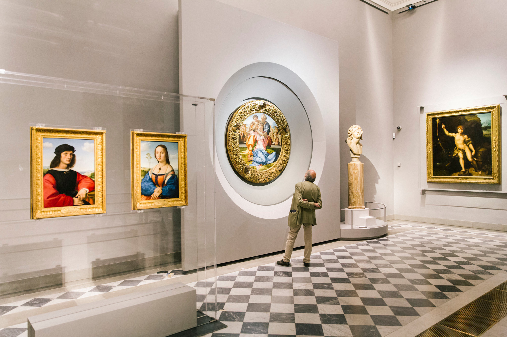

Uffizi galeriyasi: Italiya Uyg‘onish davri san’atining bebaho xazinasi
Uffizi galeriyasi (italyancha Galleria degli Uffizi) — dunyodagi eng mashhur va eng muhim san’at muzeylaridan biri bo‘lib, Italiyaning madaniy markazlaridan biri sanalgan Florensiya shahrida joylashgan. Uffizi, avvalo, Italiya Uyg‘onish davri (Renessans) san’atining eng yuksak namunalarini o‘zida jamlagani bilan mashhur. Bu galereya inson tafakkuri, estetik qarashlari va san’at tarixidagi ulkan burilish davrini aks ettiruvchi noyob asarlar bilan boy. Har yili millionlab sayyohlar Uffizi galeriyasiga tashrif buyurib, Bottichelli, Leonardo da Vinchi, Mikelanjelo, Rafael, Titsian kabi buyuk rassomlar ijodi bilan yaqindan tanishadilar. Uffizi nafaqat Italiya, balki butun jahon san’ati uchun muhim madaniy markaz hisoblanadi.
Uffizi galeriyasining tashkil topishi

Uffizi galeriyasining tarixi XVI asrga borib taqaladi. 1560-yilda Florensiya hukmdori Kosimo I de’ Medichi buyruği bilan mashhur me’mor va rassom Jorjo Vazari tomonidan bino qurilishi boshlangan. “Uffizi” so‘zi italyanchada “idoralar” degan ma’noni anglatadi. Dastlab bu bino Florensiya davlat idoralari va sud organlari uchun mo‘ljallangan edi. Keyinchalik Medichi sulolasi o‘zining boy san’at kolleksiyasini ushbu binoda saqlay boshladi. XVII asrga kelib, bino asta-sekin san’at galereyasiga aylana bordi. 1769-yilda Uffizi galeriyasi rasman ommaviy muzey sifatida ochildi va u Yevropadagi ilk jamoat san’at muzeylaridan biriga aylandi. Medichi sulolasining san’atga bo‘lgan e’tibori tufayli Uffizi bugungi darajaga yetgan. Ular san’atni siyosiy qudrat va madaniy ustunlik ramzi sifatida ko‘rganlar.
Me’morchilik va galereya tuzilishi

Uffizi binosi U shaklida qurilgan bo‘lib, Arno daryosi tomon ochilgan. Bu tuzilish shahar manzarasini san’at bilan uyg‘unlashtiradi. Binoning yuqori qavatlari galereya sifatida ishlatiladi, pastki qavatlarda esa tarixan davlat idoralari joylashgan. Binoning ichki yo‘laklari uzun va tor bo‘lib, ular galereyaning mashhur uzun koridorlarini tashkil etadi. Shiftlar va devorlar freskalar, haykallar va portretlar bilan bezatilgan. Uffizi binosi nafaqat san’at asarlarini saqlovchi joy, balki o‘zi ham Renessans me’morchiligining yorqin namunasi hisoblanadi.
Uffizi kolleksiyasi va bo‘limlari

Uffizi galeriyasida minglab san’at asarlari saqlanadi. Asosiy kolleksiya XIII–XVII asrlar orasidagi Yevropa san’atini qamrab oladi. Galereya asosan quyidagi yo‘nalishlarga bo‘lingan:
- Erta Uyg‘onish davri san’ati
- Yuqori Uyg‘onish davri san’ati
- Barokko davri san’ati
- Antik haykaltaroshlik
- Chizmalar va grafik asarlar
Uffizi kolleksiyasi, ayniqsa, Italiya rassomchiligi bo‘yicha dunyodagi eng boy to‘plamlardan biri hisoblanadi.
Erta Uyg‘onish davri san’ati

Uffizi galeriyasida Erta Uyg‘onish davri san’ati alohida o‘rin tutadi. Bu davr san’ati diniy mavzular, realizm va inson qiyofasiga bo‘lgan yangi qarashlar bilan ajralib turadi. Bu bo‘limda Jotto, Masaccio, Fra Anjeliko, Filippo Lippi kabi rassomlarning asarlarini uchratish mumkin. Masaccioning “Muqaddas Uchlik” asari perspektiva va hajm berishdagi yangiliklari bilan san’at tarixida muhim ahamiyatga ega.
Bottichelli va Uffizining ramziy asarlari

Uffizi galeriyasining eng mashhur rassomlaridan biri — Sandro Bottichelli hisoblanadi. Uning “Veneraning tug‘ilishi” va “Bahor” (Primavera) asarlari galereyaning ramziy durdonalariga aylangan. Bu asarlar mifologiya, go‘zallik va inson ruhining uyg‘onishini tasvirlaydi. Bottichelli asarlarida nafis chiziqlar, yumshoq ranglar va falsafiy mazmun mujassam bo‘lgan. Aynan shu kartinalar tufayli Uffizi Renessans san’atining markazi sifatida tanilgan.
Yuqori Uyg‘onish davri ustalari

Uffizi galeriyasida Yuqori Uyg‘onish davri buyuk ustalari ijodi keng namoyish etilgan. Bu yerda:
- Leonardo da Vinchi — “E’lon” va boshqa asarlari
- Mikelanjelo — “Doni Tondo” kartinasi
- Rafael — Madonna tasvirlari
Leonardo da Vinchining asarlari ilm-fan va san’at uyg‘unligini aks ettirsa, Mikelanjeloning ishlari kuch va dramatizm bilan ajralib turadi. Rafael esa o‘zining uyg‘un kompozitsiyalari va sokin ifodalari bilan mashhur.
Venetsiya maktabi va Yevropa san’ati

Uffizi galeriyasida faqat Florensiya emas, balki Venetsiya rassomlik maktabi ham munosib o‘rin egallagan. Titsian, Tintoretto, Veroneze asarlari rang-baranglik va yorug‘lik bilan ajralib turadi. Shuningdek, galereyada Gollandiya, Flamand va Germaniya san’atiga oid asarlar ham mavjud. Albrext Dyurer asarlari Yevropa san’ati rivojidagi umumiy jarayonlarni yoritadi.
Haykaltaroshlik va antik san’at

Uffizi galeriyasida antik davrga oid marmar haykallar ham namoyish etiladi. Bu haykallar Rim va Yunon san’atining ta’sirini ko‘rsatadi. Ular Renessans rassomlari uchun ilhom manbai bo‘lgan.
Uffizi chizmalar va grafik asarlar fondi bilan ham mashhur. Bu yerda rassomlarning eskizlari, dastlabki ishlari va texnik izlanishlari saqlanadi. Bu bo‘lim asosan tadqiqotchilar uchun ochiq bo‘lib, san’atni chuqurroq o‘rganish imkonini beradi.
Uffizi galeriyasi Italiya milliy madaniyatining ramzidir. U nafaqat san’atni saqlaydi, balki uni targ‘ib qiladi, o‘rganadi va kelajak avlodlarga yetkazadi. Galereyada doimiy ravishda ilmiy tadqiqotlar, restavratsiya ishlari va vaqtinchalik ko‘rgazmalar o‘tkaziladi.
Zamonaviy Uffizi va raqamli imkoniyatlar

So‘nggi yillarda Uffizi galeriyasi raqamli texnologiyalarni joriy etib, onlayn ko‘rgazmalar va virtual ekskursiyalar tashkil qilmoqda. Bu esa galereyani butun dunyo tomoshabinlari uchun ochiq qilmoqda.
Uffizi galeriyasi — bu san’at tarixining tirik ensiklopediyasi. Uning zallarida Uyg‘onish davrining ruhiy, falsafiy va estetik qadriyatlari mujassam. Uffiziga tashrif buyurish — bu san’at orqali inson tafakkuri va go‘zallik tushunchasining qanday shakllanganini his qilish demakdir. Shu sababli Uffizi galeriyasi dunyodagi eng buyuk san’at muzeylaridan biri sifatida e’tirof etiladi.